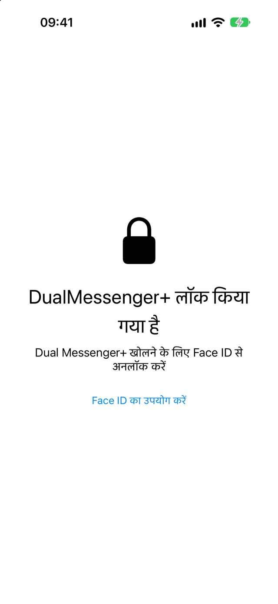
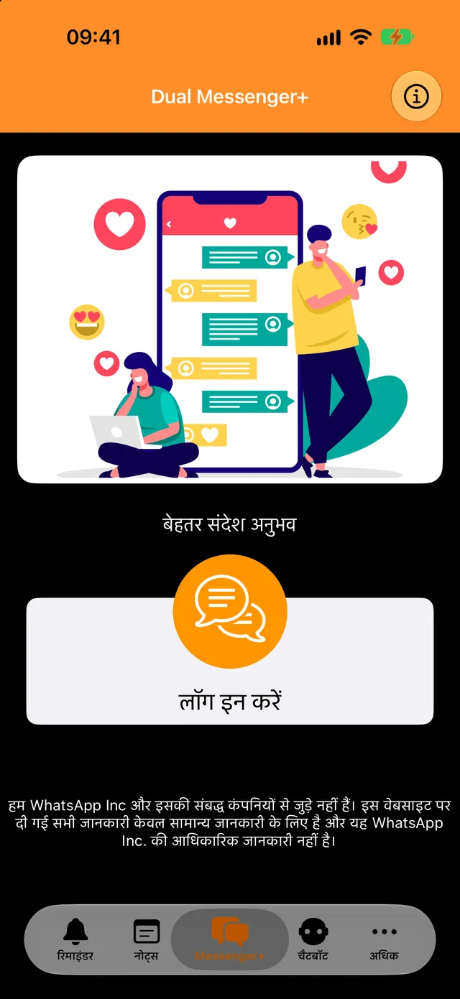
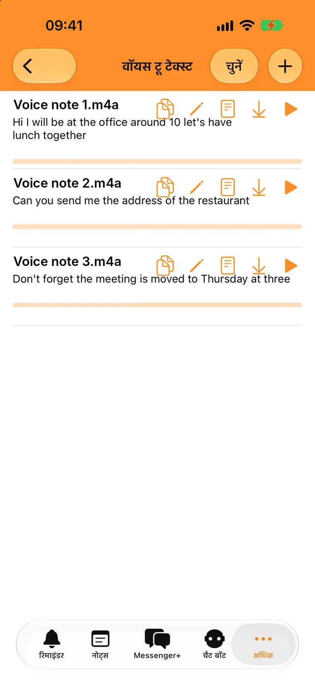
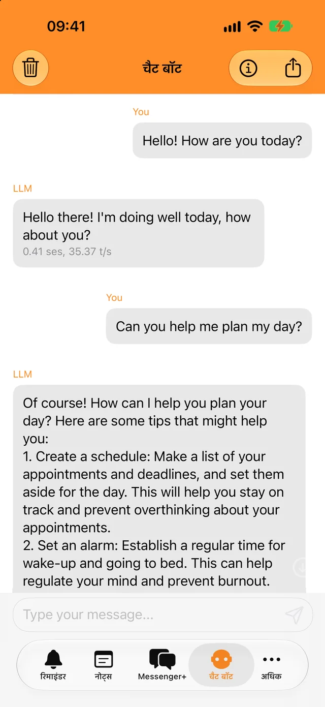
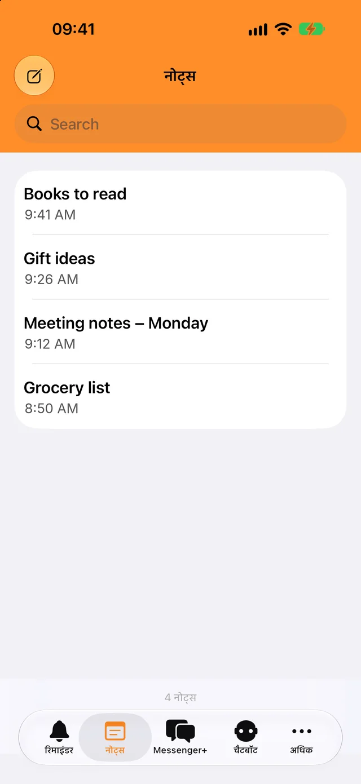

Face ID या पासकोड से लॉक करें
ऐप और आपकी चैट सिर्फ़ आप ही खोल सकते हैं। चुनें कि ऐप तुरंत लॉक हो या कुछ मिनट बाद।
अपना दूसरा अकाउंट सेकंडों में जोड़ें और काम व निजी चैट अलग रखें।
डाउनलोड मुफ़्त है। iPhone, iPad और iPhone Duo के लिए।

आपकी चैट के लिए एक लॉक और रोज़ काम आने वाले कुछ टूल, सब एक ही ऐप में।

ऐप और आपकी चैट सिर्फ़ आप ही खोल सकते हैं। चुनें कि ऐप तुरंत लॉक हो या कुछ मिनट बाद।

वॉयस मैसेज और ऑडियो फ़ाइलों को अपनी भाषा में टेक्स्ट में बदलें और कहीं भी कॉपी करें।

तुरंत सवाल पूछें, बिना इंटरनेट के भी। बॉट के साथ आपकी बातचीत फ़ोन से बाहर नहीं जाती।

ज़रूरी बातें लिख लें, सर्च से ढूँढ़ें और रिमाइंडर का समय होने पर नोटिफ़िकेशन पाएँ।
आपको वह फ़ोन चाहिए जिसमें आपका दूसरा WhatsApp अकाउंट है, बस थोड़ी देर के लिए।
“लॉग इन करें” पर टैप करें। स्क्रीन पर एक QR कोड दिखेगा।
“सेटिंग्स” में जाएँ, फिर “लिंक किए गए डिवाइस” में, और “डिवाइस लिंक करें” पर टैप करें।
उस फ़ोन को QR कोड की ओर करें। आपकी चैट Dual Messenger+ में खुल जाएँगी।
जब तक आप अपने फ़ोन पर हर 14 दिन में कम से कम एक बार WhatsApp इस्तेमाल करते हैं, WhatsApp लिंक किए गए डिवाइस को साइन इन रखता है।
Dual Messenger+ के पास ऐसा कोई सर्वर नहीं है जो आपके मैसेज देखे। कोई अकाउंट बनाने की ज़रूरत नहीं, और ऐप में कोई विज्ञापन या ट्रैकर नहीं हैं।
नोट्स, रिमाइंडर, रिकॉर्डिंग और बॉट के साथ हुई बातचीत आपके iPhone या iPad पर सेव होती हैं।
आप हमें न नाम देते हैं, न ईमेल पता, न फ़ोन नंबर।
Face ID और Touch ID को आपका डिवाइस संभालता है। ऐप को कभी बायोमेट्रिक डेटा नहीं मिलता।
iPhone और iPad के लिए Dual Messenger+ डाउनलोड करें।
App Store से डाउनलोड करें